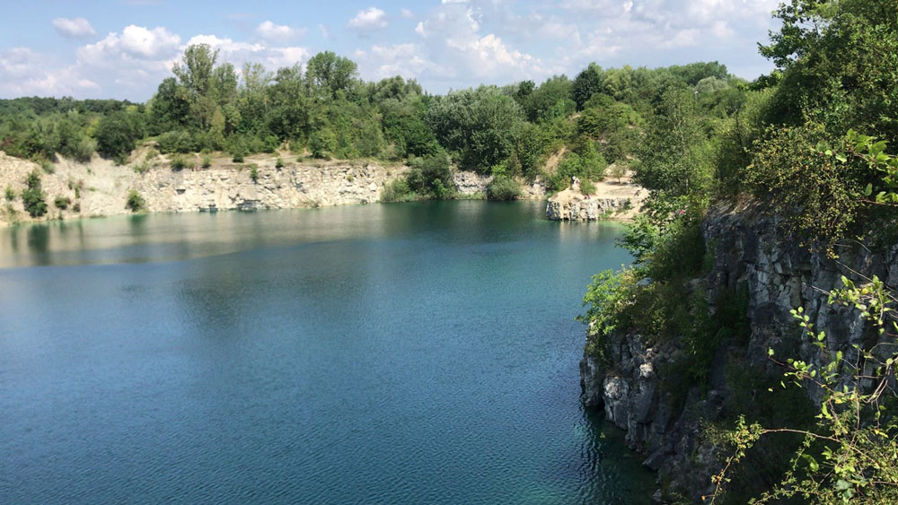

Informacje o witrynie
Witamy na stronie Agroekologicznych Obrębów Kulturowych. Agroecological Cultural Precincts (ACP), interdyscyplinarny projekt łączący sztukę i agroekologię w celu zbadania szerokiej gamy możliwości zrównoważonego odnoszenia się do środowiska.
Jak harmonijnie współistnieć z drugim człowiekiem, zwierzęciem, rośliną czy krajobrazem, aby każdy mógł znaleźć przestrzeń do samorealizacji poprzez wzajemnie wzbogacające się współistnienie?
ACPs są, że tak powiem, „rozszerzonymi” wersjami parków. „Rozszerzonych” nie ze względu na ich większy rozmiar, ale z powodu działań, interwencji, instalacji, eksploracji w sztuce i agroekologii, które mają miejsce w ich wnętrzu. W ten sposób rozszerzają tradycyjną koncepcję parku, od po prostu pięknego, ale całkowicie pasywnego tła do bogatej platformy wymagającej aktywnego zaangażowania w otaczające elementy przyrody.
Dzięki interwencjom, które pobudzają ciekawość i zachęcają do działania, oczekuje się, że goście z krajów ACP wykażą się zachowaniami, które powinny rzucić światło na to, w jaki sposób oznaczają one przyrodę i odnoszą się do niej, jak tę relację można rozumieć z kulturowego i historycznego punktu widzenia oraz jak można go przekształcić lub dalej rozwijać.
Jednym z głównych celów tego większego projektu jest zmniejszenie przepaści między relacjami człowiek-natura, dualizmu, który stał się poważnym problemem ekologicznym w kontekście kapitalizmu i jego rozrzutnego sposobu działania. Interwencje ACP są zatem wolne od zewnętrznych materiałów lub narzędzi, wymagają jedynie ludzi i elementów znalezionych na miejscu. Powodem tego nie jest próba powrotu do prymitywizmu, ale raczej odkrywanie poprzez kreatywność ogromnej liczby niezbadanych możliwości, które już oferują nam nasze środowiska, pozwalając nam zaspokoić różnorodne potrzeby od zabawy, sztuki, jedzenia, itp. bez polegania na gospodarce rynkowej.
Pozdrowienia,
Rodrigo Arenas Catalán.
Studium przypadku:
1) Zakrzówek
2) Salwatora